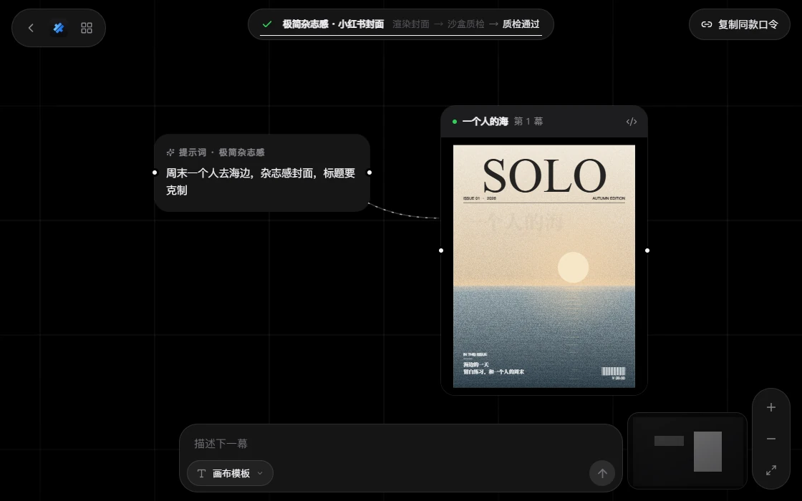

在画布上组织结果
缩放和平移画布，把提示词、文本、图片、网页和动效放在不同节点。连线记录创作顺序，也可以从支持分支的成品节点继续写下一幕、换风格或对比方案。
AI 无限画布
写下提示词，选一个模型，在同一张画布上完成文本、规划和生图。每次生成都留在节点里，随时接着做。
本地模板可直接使用，云端模型在登录后使用。

从空白画布开始，或用现有模板搭出第一幕。
缩放和平移画布，把提示词、文本、图片、网页和动效放在不同节点。连线记录创作顺序，也可以从支持分支的成品节点继续写下一幕、换风格或对比方案。
在输入栏切换文本或生图，再按 GPT、Claude、DeepSeek、豆包等系列选择。用文本模型写文案、拆分镜或生成代码，按模型调整推理等级和输出上限。部分生图模型支持一次生成多张。
画布和结果存入当前设备。图片可以另存原图，文本可以复制，画布成品可以导出为 HTML。支持录制的模板还可以在设备上导出视频。
空白画布适合自由搭建。想先看成品是什么样，可以直接打开六种内置模板。
例如把「夜市的一晚」做成短视频分镜，再为视频生成一张封面。
点「空白画布」新建项目。想先体验，可以点一张内置模板卡片，直接查看本地生成的示例。
选文本模型和「规划」，输入「把夜市的一晚拆成 3 幕短视频分镜」。再切换生图模型，输入封面描述，设置图片数量后发送。
在画布上保留分镜和封面，用连线把它们关联起来。图片节点可以保存原图，顶部导出入口可以导出画布成品。
空白画布和本地模板可以直接使用。使用云端模型或兑换积分时，从工作台顶部用邮箱或手机号加密码注册或登录。
新账号从 0 积分开始。拿到兑换码后，在顶部账号面板兑换。生图可按张计费，部分模型按实际 Token 结算。生成前会预留积分，任务失败会退回预留额度。
账号积分可以随账号使用，项目保存在创作时使用的浏览器或应用里。换设备前，可以保存原图、导出 HTML 或复制同款口令。口令用于传递提示词和画布布局。
用浏览器点「打开网页版」即可。Android 也可以下载 APK，下载完成后打开安装包，按系统提示完成安装。